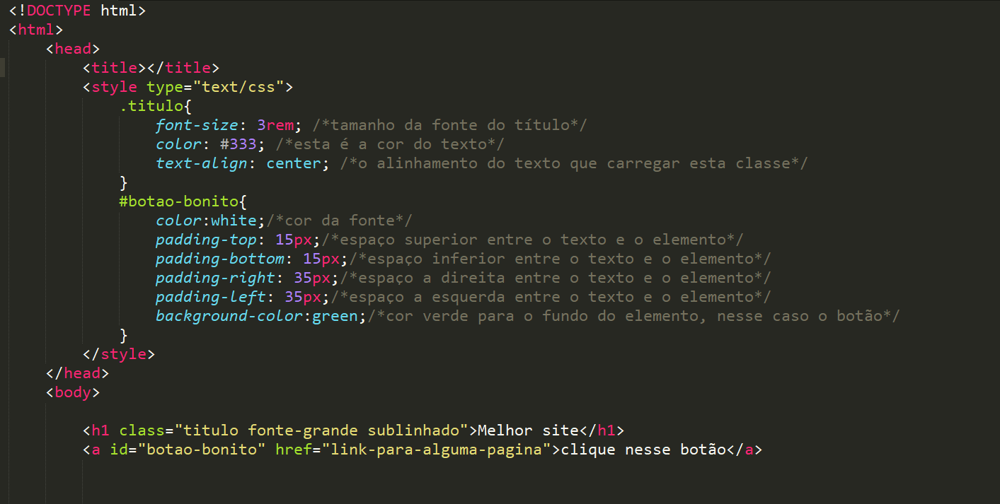

O que é Java Script
JavaScript é uma linguagem de programação de alto nível criada, a princípio, para ser executada em navegadores e manipular comportamentos de páginas web. Com seus scripts é possível incluir, em uma página estática, elementos dinâmicos como mapas, formulários, operações numéricas, animações, infográficos interativos e muito mais.
O JavaScript é uma das mais importantes tecnologias voltadas para o front-end e, unindo-se ao trio HTML, CSS e PHP, formam um grupo de linguagens que abrangem praticamente todas as exigências do desenvolvimento de uma página completa, dinâmica e com boa performance.
O que é Sublime Text
Sublime Text é um editor de código-fonte multi-plataforma e shareware com uma interface de programação de aplicativos (API) para a linguagem Python. Ele suporta nativamente muitas linguagens de programação e linguagens de marcação, e funções podem ser adicionadas por usuários com plug-ins, geralmente criados pela comunidade e mantidos sob licenças de software livre. Inicialmente, o programa foi pensado para ser uma extensão do Vim.
O que é CSS
CSS é a sigla para Cascading Style Sheets, ou seja, Folhas de Estilo em Cascatas. É uma maneira de dar estilo ao código criado por linguagens como HTML, XML ou XHTML, por exemplo. De forma prática, ela funciona como uma camada de personalização ao conteúdo visível.
Estes tipos de linguagem citados foram idealizados para serem funcionais e, por serem de marcação, precisaram ser aperfeiçoados. O CSS, no caso, veio como uma boa solução para aprimorar a estética dos sites.
Por meio dele, é possível separar formatos de conteúdos, bem como definir como serão exibidos em cada página.
O que é HTML
HTML (abreviação para a expressão inglesa HyperText Markup Language, que significa: "Linguagem de Marcação de Hipertexto" é uma linguagem de marcação utilizada na construção de páginas na Web.